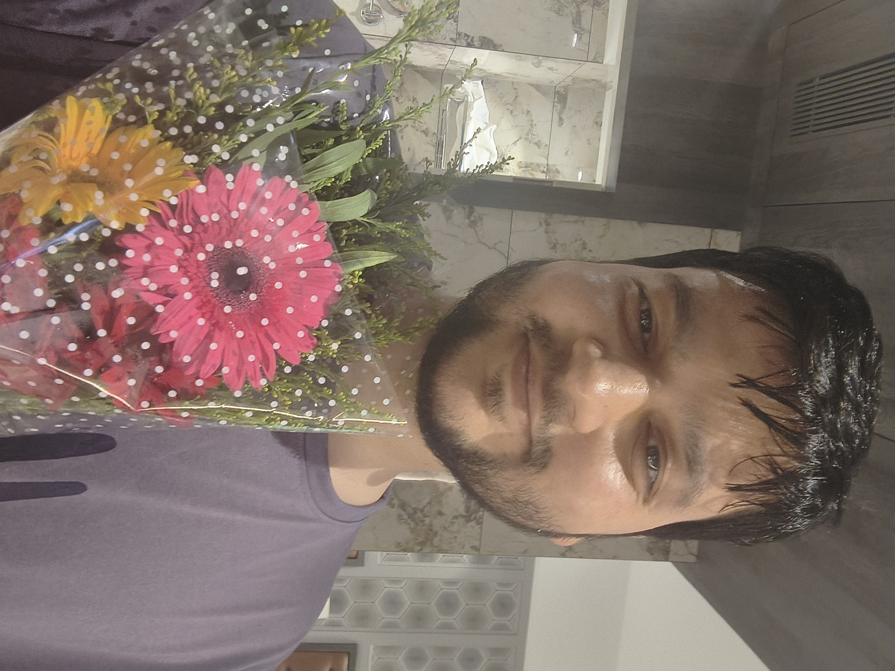

Chapter I · The Eve
The night before
knew everything
The kind of quiet that arrives before something rearranges your life.

You can feel a life turning
before it does.
Chapter I · The Eve
The kind of quiet that arrives before something rearranges your life.

You can feel a life turning
before it does.